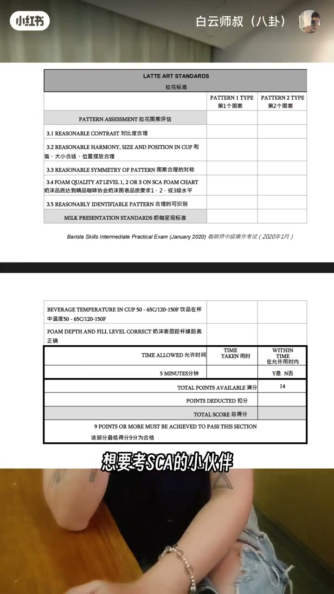
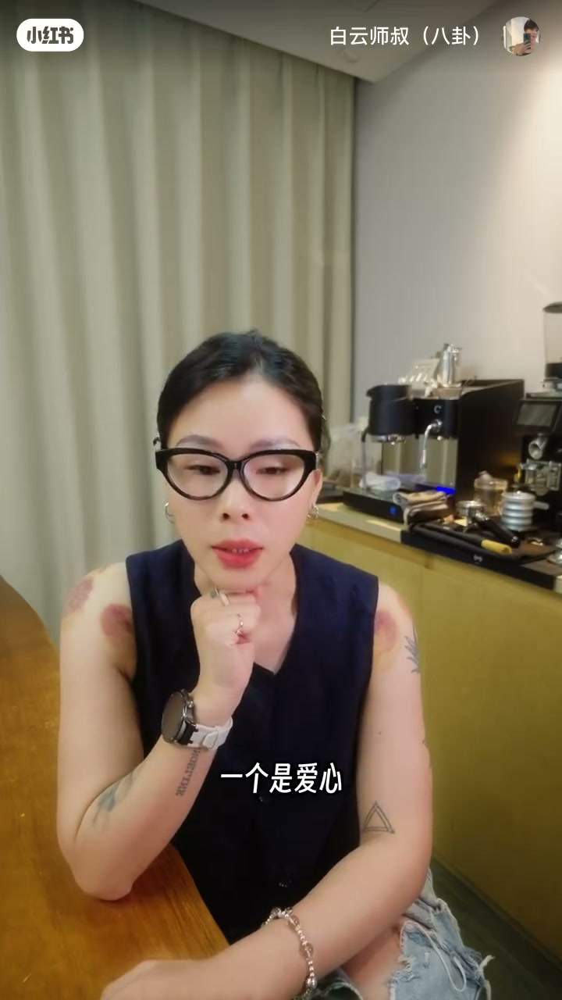
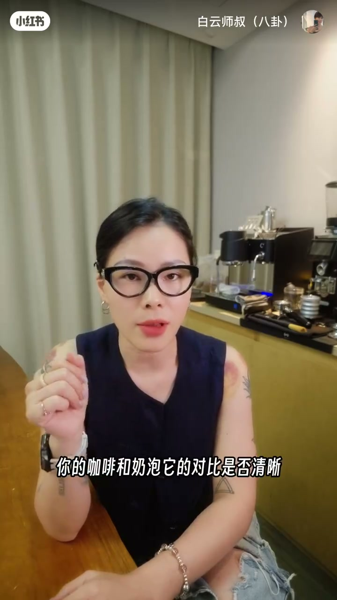
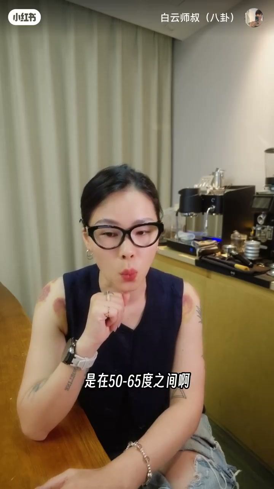
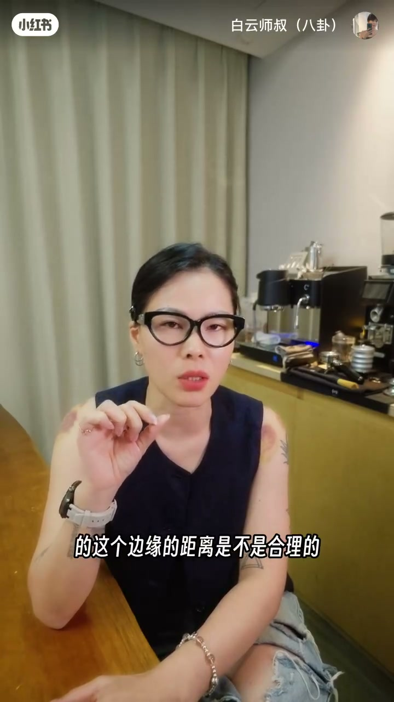

内容要点
白云师叔贴出 SCA 咖啡师中级实操考卷中的拉花标准：5 分钟两杯不同图案；图案评估看对比度、和谐大小位置、对称、奶泡 1–3 级、可识别；出品评估要喝——温度约 50–65℃，奶液距杯缘出杯量正确。按表练，比猜考点有效。
知识结构
5分钟内两杯不同图案（爱心/叶子常见，也可玫瑰郁金香等）。
对比度；大小位置和谐；对称；SCA奶泡品质等级；图案可识别。
考官会喝；温度50–65℃（约50℃呈现）；奶液距杯口出杯量勿七分满。
SCA 拉花项不是只拼花形好看：限时双杯是门槛，五维图案分是量表，出品温度与出杯量证明「这是饮品」。备考按试卷条目逐项自检，比盲目加难度图案更对症。
00:00-00:35考卷揭秘：5分钟两杯不同图案
很多人问 SCA 拉花难不难、考什么。作者贴出学员考卷里的拉花考核项，想考的人可以照着练。00:14 画面是 Barista Skills Intermediate Practical Exam（2020-01）拉花标准表。
特指该项考核时间 5 分钟，需做出两杯不同图案——爱心和叶子比较常见；若更强，玫瑰、郁金香或叶纹也可以，只要两种不一样且五分钟内完成。


00:35-01:18图案评估五维度；必须可识别
考官评分两项：拉花图案评估与出品评估。图案评估分五个维度：咖啡与奶泡对比是否清晰；图案大小是否合适、位置是否合理、整体是否和谐；对称图案左右是否对称（爱心一边大一边小不行）；奶泡是否达到 SCA 精品要求的一/二/三级；图案是否可识别——自称叶子却抽象难辨也不行。
00:46 字幕「分为五个维度啊」对应口播展开；与试卷 3.1–3.5 条目一致。

01:18-02:10出品评估：温度与杯缘距离
出品首先是饮品，考官会喝，不是只看图案。温度要求在 50 到 65 度之间，比较适口；奶泡打完一气呵成呈现给客人或考官，通常应在约 50 度左右。
第二看奶液表层到杯口边缘的距离，即出杯量是否正确——点了拿铁却七分满、八分满不行。以上是拉花项会考核的两个项目与维度；想了解更多 SCA 咖啡师考试内容可留言。试卷另可见满分 14、及格 9、限时 5 分钟。


完整转录（73段）
以下文本由 Whisper medium 模型自动转录，可能存在少量识别误差，已尽可能修正。
很多人问我说老师SA的拉花难不难
到底考一些什么
今天是不是就来给大家揭秘一下
我们在SA的咖啡室考核当中
拉花到底考点什么
在SA学员的考卷当中
有一个就是关于拉花的考核项
我把这个标准贴在这里
大家可以看一下
想要考SA的小伙伴可以照着列起来了
首先在SA的咖啡室考核里面
这里特指终极考核
它的考核时间是5分钟
你需要在5分钟的时间里面
做出两杯不同图案的拉花
一个是艾西一个是叶子
就是比较常见的
当然说我是很强
我要做玫瑰和玉金香或者说鸭纹都可以
只要是两种不一样的图案
并且是在5分钟之内完成的都行
考官会根据你做出来的咖啡拉花进行评分
那评分是有两项
第一就是拉花图案的评估
第二就是出品的评估
拉花图案的评估分为五个维度
我们可以看到第一就是对比度
你的咖啡和奶泡它的对比是否清晰
第二就是这个图案的大小是否合适
它的位置是否摆放的合理
以及说它是不是整体看上去是比较和谐的
第三点就是图案的对称性
这个图案如果你做的是对称的图案
左右是不是对称的
比如说你做爱心
左边心大右边心小肯定是不对称的
第四点就是出品的奶泡是否达到了
SCA精品咖啡要求的奶泡的质量等级
分别为一级二级三级
第五个就是你的图案是不是可以识别的
就是如果你说我做的是一个叶子
可是我没有看出来
看了半天它可能像一个什么很抽象的什么东西
那也不行
那第二关于出品的评估
首先它是一个饮品
所以它在出品的时候考官是会喝的
你不要觉得我做拉花就是看看图案
不会喝的
考官是会评估你的出品温度是否合理
考核的要求是在50到65度之间
其实就是比较适口的一个温度
那通常我们的奶泡打完之后
呈现给就一气呵成做完之后呈现给客人也好
呈现给考官也好
它应该都是在50度左右
第二就是奶酪距离杯口这个位置
其实就是你这个出杯量是否正确
就那奶泡最上面那一层
到我们杯口的这个边缘的距离是不是合理的
如果说我点了一杯拿铁
你给我上来一个七分满的八分满的
那肯定是不行的
以上是SCA在考核拉花这一项的时候
区会考核的两个项目以及不同的维度
那大家如果你还想知道更多官员
SCA的咖啡室考试考哪些
自己要准备一些什么
也可以在评论区给我留言
如果问的人多
我们可以出一期视频专门来讲一下
OK series coffee 开启到这里是白云书
我们下个视频再见拜拜